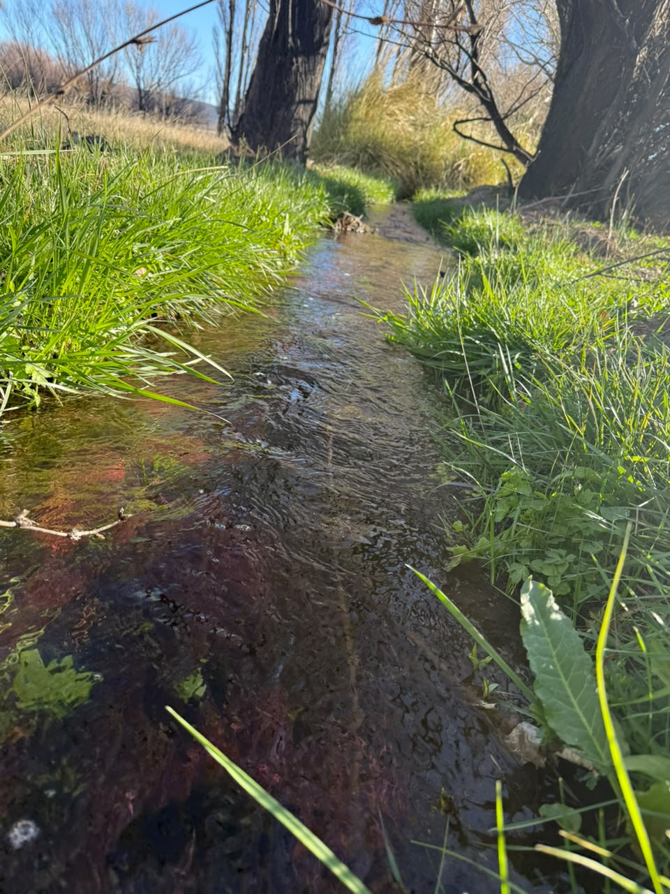

¿De dónde sale el agua que tomamos en nuestro paraje?
La naturaleza es muy importante en nuestras vidas. En nuestro paraje Treneta encontramos plantas, tierra, animales y agua; esto nos brinda los recursos necesarios para poder vivir. Por eso es necesario reconocer la importancia de la naturaleza y cuidarla entre todos.
Este paraje está muy unido a la naturaleza: cuenta con un arroyo que brinda el agua que se potabiliza en el tanque de nuestro paraje para su consumo. El agua se origina en las nacientes de la meseta que rodea el paraje y le da reparo al lugar.
Las plantas, los animales y la tierra son parte fundamental de la vida diaria de todos nosotros.

El agua: el corazón del paraje
El arroyo es el corazón del paraje. Si lo mantenemos limpio, sin basura ni químicos, el agua seguirá sirviendo para tomar, regar y para que vivan los peces y las plantas.

La tierra fértil
Algunos vecinos aprovechan la tierra para cultivar sus propias verduras, demostrando la importancia de cuidar y aprovechar los recursos naturales. Además, la tierra ayuda mucho para los cultivos porque es muy fértil: se pueden cosechar lechuga, tomate y acelga, y gracias al arroyo se pueden regar muy bien.
Nuestro paraje tiene una tierra muy fértil y el arroyo es muy bueno para regar los cultivos; se pueden cultivar diferentes tipos de plantas y verduras, por ejemplo papa, zapallo y lechuga.